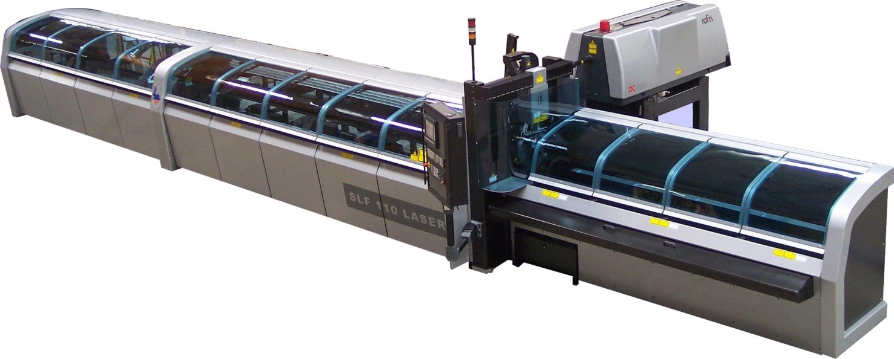
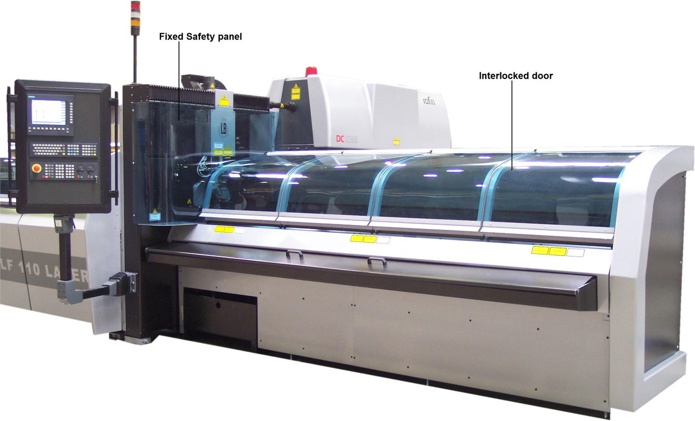

Для высокоточного автоматического раскроя труб, фасонных профилей и различных деталей металлопроката.
Установка лазерной резки труб Balliu SLF

Система промышленной лазерной резки труб Balliu SLF специально разработана для автоматической загрузки, линейного позиционирования и непрерывной резки по 3-4 осям круглых, овальных, квадратных и прямоугольных труб напрямую из пачек. Жесткая станина станка сварена из термостабилизированных заготовок толстого проката.
Все движения рабочих органов осуществляются под одновременным прецизионным управлением ЧПУ, направляя лазерный луч по сложным пространственным запрограммированным траекториям. Комплекс координирует работу 9 независимых цифровых осей. SLF штатно укомплектован автоматической системой выгрузки готовых изделий: она поддерживает длинные заготовки во время вращения без необходимости переналадки и осуществляет программную сортировку деталей.
Особенности лазерных источников Rofin-Sinar / Coherent:
- Отличные параметры и стабильность фокусного луча во всей рабочей зоне.
- Постоянный параметр BPP во всём диапазоне регулирования мощности.
- Полное отсутствие расфокусировки лазерной головки.
- Длительная необслуживаемая эксплуатация и низкое энергопотребление.
- Компактный дизайн, интегрированный в общие габариты комплекса.
- Расчетный срок службы диодных модулей накачки > 50 000 часов.
Высокомощные твердотельные лазеры Rofin-Sinar — это результат синергии двух передовых технологий: активных оптических волокон и полупроводниковых диодов накачки. Активные волокна пропускают экстремально яркий световой поток, что позволяет получать кВт-ную мощность при превосходном качестве луча. Использование ярких одиночных эмиттерных диодов гарантирует колоссальное увеличение ресурса по сравнению со стержневыми лазерами YAG или газовыми резонаторами CO2.

Комплексные устройства безопасности
Система оборудована активным многолучевым оптическим защитным барьером по всему периметру зоны автоматической подачи труб. Кнопка аварийного останова (Emergency Stop) вынесена на мобильную консоль оператора для мгновенного контролируемого отключения всех узлов. Предусмотрена световая сигнализация активного излучения «LASER ON». Зона резания закрыта жесткими защитными панелями. Загрузочные и разгрузочные двери снабжены концевыми электрическими блокираторами и пневматическими упорами фиксации.
Прецизионный привод рабочих осей
Все линейные оси собраны на прецизионных шлифованных шарико-винтовых парах (ШВП), за исключением скоростной оси X, которая приводится в движение косозубой передачей шестерня-рейка от высокодинамичных сервомоторов переменного тока Siemens. Винты ШВП зафиксированы радиально-упорными подшипниками в жестких опорах, что полностью исключает механический люфт при смене направления движения.
Мощный поворотный патрон вращается на массивных подшипниках высокой жесткости и управляется синхронизированной системой ремень-звездочка. Позиционный контроль реализован по замкнутому контуру через систему ЧПУ, подключенную к оптическим абсолютным энкодерам с дискретным разрешением менее 1 микрона.
Консультация инженера по трубному раскрою
Нажмите на кнопку ниже, чтобы мгновенно перейти в чат WhatsApp. Вы сможете напрямую прислать чертежи сопряжений труб, обсудить параметры профиля, толщину стенок сплавов и рассчитать время цикла обработки на лазерном комплексе.